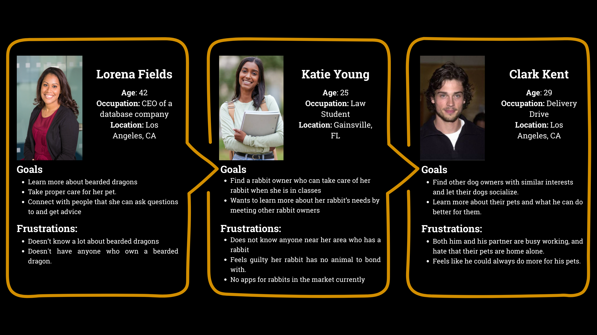

🐾PetPals – A Mobile App for Pet Owners
Connecting Pet Parents, One Swipe at a Time
Role
duration
Tools
Overview
A mobile app that connects pet owners and pets through playdates, community groups, care resources, and personalized pet matching, all built with SwiftUI and Xcode.

The Problem
Pet owners often face challenges in socializing their pets, finding other pet lovers nearby, or accessing reliable pet care resources. Most existing apps lack inclusivity, aren’t built for all species, or don’t offer a true sense of community. PetPals bridges this gap with a space to connect, learn, and grow together.

The Solution
PetPals offers:
- Pet matching through swipe-based interaction
- Group and event creation
- Location-based discovery of parks, vets, and pet stores
- Personalized resources and care tips
- A personality quiz to match pets with owners

Research & Personas
We conducted interviews and surveys with 9 pet owners. Key findings included:
- Safety is top priority: users requested profile verification
- Exotic pet owners felt unseen in existing apps
- Most had never arranged a “pet playdate” before
- Users rely on Reddit or Facebook for advice, but wanted a dedicated app



UX Design Process
Our design process focused on:
- Safety: ratings and verifications
- Personalization: filters and swiping features
- Memorability: playful icons and minimal learning curve
Development Process
We built the app in SwiftUI using Xcode 15.2. I worked alongside Michelle and Stef, dividing development across major views:
Home Page
Pet Matching
Pet resources
Track pet care goals
MapKit-based nearby places
Pet profile and photo uploads


Outcomes & Reflection
PetPals gave us experience building a full iOS app from idea to prototype. We learned how to:
• Work with Swift UI and Apple Frameworks
• Prioritize user feedback through usability testing
• Design with inclusivity and intention
We hope to continue developing the backend and expand features post-launch.
Takeaways
Designing Pet Pals taught me the importance of accessibility, community-building, and iteration. Through hands-on prototyping and user testing, I learned how to craft inclusive experiences rooted in empathy, delight, and real-world needs.